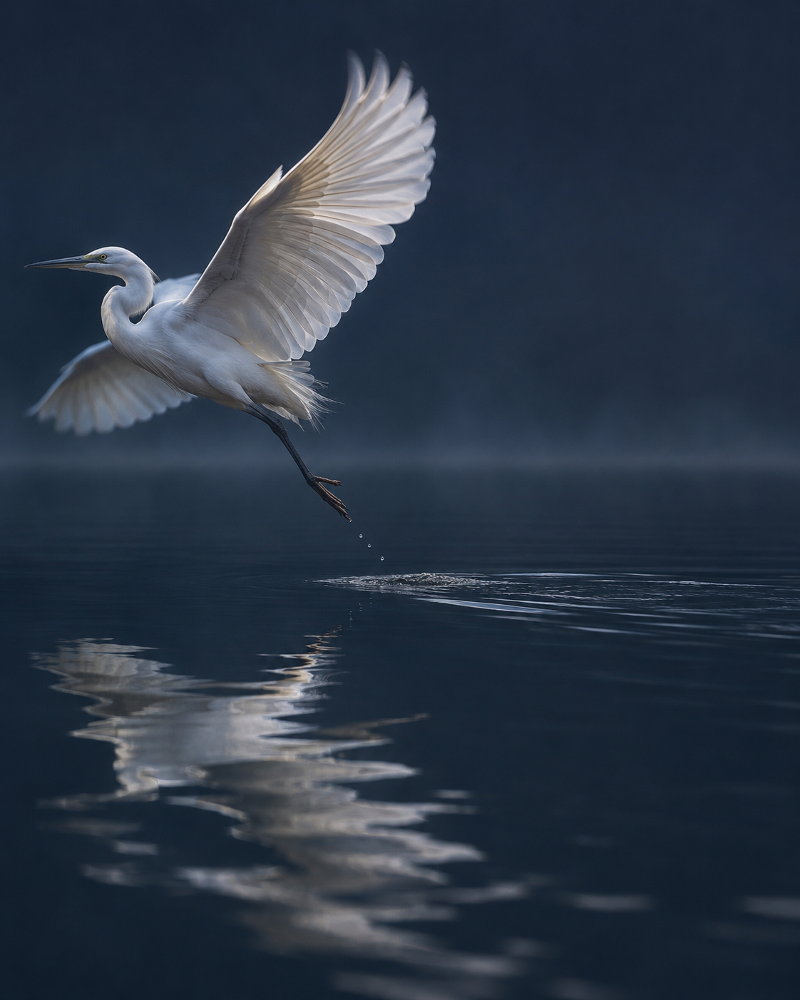

海豚与光弧：一瞬间的呼应
弓起的身体与橙色光弧相扣，水花把曲线接回海面，倒影又把高处的亮点带入水中。动势被定住，留下短暂相遇的张力。
弧形、姿态、水花与倒影是可见依据；“相遇”是我们的艺术解读。从感受到创作价值
先感受画面，再理解形体如何呼应、瞬间如何凝固、留白如何产生联想。把这些认识带入原创创作，逐步检验它们能否形成值得停留的体验。

相遇的瞬间：海豚身体与光弧相扣，水花与倒影延续动势。可借鉴的是关系与瞬间的设计。
留白中的诗意：鲸尾与满月之间没有接触，空隙引出承托的联想。可借鉴的是让观者参与完成关系。
摄影语言的承载：白鹭试作以翼、水滴和倒影表现离水瞬间，情绪尚待确认。技法服务表达，真实看图反馈决定效果。
工作路径：艺术意图、画面关系、摄影语言、真实反馈、产品转译。
对我们的价值：形成审美与选片依据；推动原创简报和系列创作；探索图像展、壁纸与短片等体验方向。
研究、实际效果与我们的价值
我们研究画面怎样建立值得停留的关系，再把观察带入自己的创作。艺术意图确定方向，摄影语言承载表达，真实看图反馈推动判断。
当前仍在校准，尚无明确选中的生成图。
只有置顶双图获得明确正向反馈；它们的原作者及实拍、合成或AI制作方式仍未核实。生成图：10张待评定、11张未选、1张停用历史。“继续”不视为认可。
把反馈变成依据
把用户的明确反馈与我们的工作判断分开，避免把画面更精细当作情绪已经成立。
弓起的身体与橙色光弧相扣，水花把曲线接回海面，倒影又把高处的亮点带入水中。动势被定住，留下短暂相遇的张力。
弧形、姿态、水花与倒影是可见依据；“相遇”是我们的艺术解读。圆月、尾鳍中央与尾柄沿中轴相接，展开的尾鳍与垂落的金色水流构成稳定形象。月与尾没有接触，间隙却让观者自然联想到承托与回应。
中轴、月尾间隙与落水是可见依据；“承托”是联想，并非实际接触。同一张观看桌
原比例展示，点击放大。最多选择三张并排看，保留作者、反馈、实际提示词与生成记录。
正在载入图集…
没有符合筛选的画面。
图集暂未载入。
实际动手看变化
任选本项目生成图，调整明暗、色彩并拖动比较，再看同一张图的八秒镜头预演。所有调整都从原图开始。

镜头预演是浏览器对静态图做平移缩放，不是AI视频。预览调整不改原件，下载输出为普通PNG。
保留发生过的判断
展开阶段可回看对应图片。用户评价按原意整理，后面的成因与改进仍是工作判断。
参考怎样进入工作
当前交付的是可追溯的研究、试作与工具；新增生成图能否达到置顶双图的停留感，尚未得到确认。
公开可见：@cozyycabin 展示图片、短视频与简短配文；它的选片与呈现方式可作为研究对象。
我们的分析：可探索带出处的情绪参考库、原创图像系列与创作简报工具。图像展、壁纸和短片方向仍需原创作品与真实观看反馈支持。
尚未核实：每条素材的原创身份、实拍或合成方式、具体制作工具，以及账号的付费产品和收入。这里不把这些推测成既有业务。
来源与可带走的资料
原帖引用、外部作品来源、生成指令、审美校准和工具入口集中保留。五张外部摄影仍以原站在线图片展示。